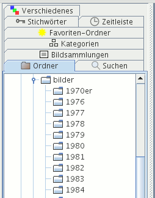

Im Kartenreiter Ordner sehen Sie die Ordner (Verzeichnisse) Ihres Computers. Klicken Sie mit der linken Maustaste auf einen Ordner, in dem Bilder sind, werden Vorschauen davon angezeigt im mittleren Fensterbereich.

Haben Sie einen Ordner ausgewählt und klicken mit der rechten Maustaste darauf, öffnet sich ein Kontextmenü mit bestimmten Aktionen. Aktuell können Sie den ausgewählten Ordner zu den Favoriten-Ordnern hinzufügen.